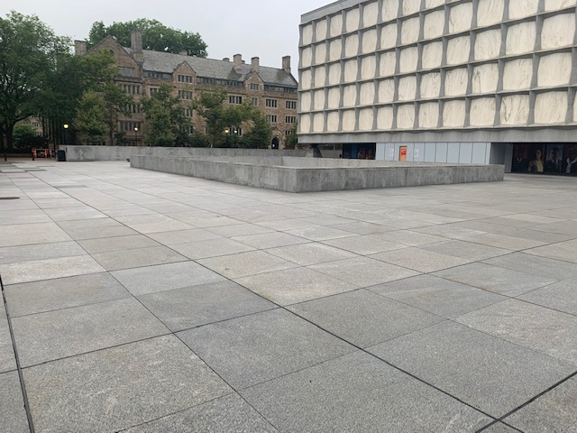

My Favorite features
The Grid
Beinecke library houses some of the rarest books in the world which made climate control a necessity when designing the library and plaza. Part of this design was to build the plaza with panels arranged in a grid with rubber linings separating them. These rubber linings are just deep enough between the panels that they catch your wheels if you place your board over them while still allowing for a smooth ride if you’ve got a little bit of speed. These make them functionally very similar to the crack from the lot where you can practice many stationary tricks. These are also great for learning or improving your Ollies.

Plaza
The plaza in itself is a great resource to use whenever in the area. I sometimes find myself stopping doing a lap over the plaza whenever I pass by it just because of how smooth the ride is. The layout of the plaza is great for building up leg strength by doing laps around the library and the sunken courtyard in front of the library. The chairs, tables, columns, and other maneuverable obstacles also make this spot great for playing skate tag which is just tag but on boards.
 Previous page Flip page